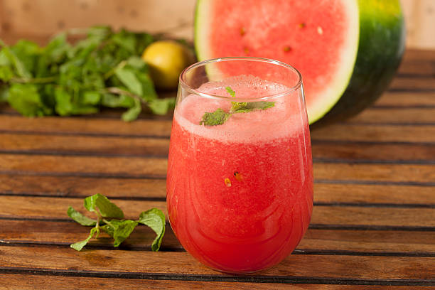

Easy and Tasty Watermelon Juice
Home

Description
Extremely easy watermlon juice recipe to rehydrate and feel refreshed. If you have a blender, available fresh watermelon and some mint, this is the perfect recipe. I do this all the time and I gaurantee you will too.
Ingredients
- Fresh watermelon
- Mint leaves
Steps
- Plug in your blender!
- Cut your watermelon in pieces that only include the red part; we won't be blending the hard exterior.
- Add your pieces of watermelon and few mint leaves to a blender, and simply hit blend.
- Do this for a few seconds until the liquid is chunky but watery.
- Pour into a cup and enjoy! You can add some water if needed.